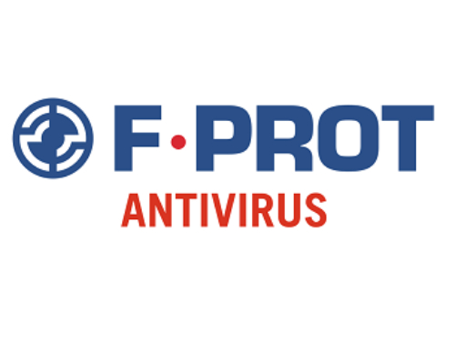

Top 10 Linux OS Antivirus 2020
#1 Sophos

Sophos is one of the best free antiviruses for Linux. It does not only support on-demand scanning but also provide real-time scanning feature. It detects worms and trojans as well and helps to remove from the repository. But if you are kinda geeky Sophos provide you terminal coding facility to make it easier.
✅ Terminal base✅ Detect and remove threats
✅ Works for worms, trojan, virus, and malware
✅ Lightweight and easy to use and install
✅ Cross-platform support
✅ Block and remove non-Linux threats
₱499.00
#2 Comodo
Comodo is another best antivirus software for Linux. It is well known for its unique architecture support and cross-platform feature. It also supports email scanning feature with additional anti-virus protection system which is not available on other application.
✅ Easy to use and install✅ On-demand scanning with no false alert
✅ Real-time protection
✅ Antispam support
✅ Supports cross-platform
✅ Support server-side protection
₱699.00
#3 ClamAV

ClamAV is the open source and free to use. It is recognized as versatile antivirus to detect trojans, malware, and viruses. It also supports standard mail gateway scanning. It is easy to use and fast to run because it doesn’t have a native GUI and works through the terminal.
✅ Opensource✅ Cross-platform works in Linux, Windows and Mac OS
✅ Works from the terminal
✅ Support on-access scanning for mailing service
✅ POSIX compliant support
✅ Portable
₱599.00
#4 F-Prof
Another well-known Linux antivirus that offers a well-rounded security experience for workstation users who want simple decisions. F-Prot Antivirus for Linux has several packages, offering distinct variants of cybersecurity, designed to fit different needs.
✅ Protection against Trojan, boot sector and macro viruses✅ Open Source
✅ Portable
✅ Lightweight and stealthy
✅ Scanning feature for internal drive and drivers
✅ Scan for boot sector virus, macro, and trojan viruses
₱1,199.00
#5 Chkrootkit
Chkrootkit, you can guess it really works on root and frankly speaking it is the best option for rootkit available in a Linux system. IT is lightweight and portable. You can quickly burn it to CD or USB. It contains multiple programs to support the users like.
✅ Rootkit detection✅ Lightweight
✅ Portable
✅ Easy to use and fast
✅ Run from terminal
✅ Multiple error solver
₱899.00
#6 Rootkit Hunter
Rootkit Hunter is another best option for the rootkit. It works on command and uses backdoor and other local exploits to detect all kind of virus, trojans. A rootkit is developed on Bourne shell with an SHA-1 hash comparison for better service with portability feature. This particular software is available for different distros
✅ Open Source✅ Rootkit detection
✅ Works from command line/span>
✅ Fast and easy to use
✅ Supports SHA-1 comparison to detect malicious entry
✅ Portable
₱1,299.00
#7 ClamTK
ClamTK, the updated version of ClamAV with its lightweight GUI for usual user. Since it is with GUI, it is easy to use and having a facility for on-demand scanning for malware and trojans. It is developed with Perl and Gtk libraries
✅ Opensource✅ Works from GUI
✅ Support on demand scanning
✅ Portable
✅ Easy to use and fast
✅ Multiple error solver
₱399.00
#8 BitDefender

BitDefender did an excellent job as a Linux antivirus software. Here is a but we have to think of, as a Linux antivirus software it is not free, you have to download the trial version. But within this trial, it is still the best antivirus software for Linux.
✅ It scans of archives.✅ Desktop integration supports.
✅ Intuitive GUI and also support command line interface
✅ Quarantine infected files into a protected directory.
✅ Regular update for assuring new threa
✅ Network security
₱850.00
#9 ESET NOD32 Antivirus 4
ESET was in the first rank and selected as the best antivirus for Linux or Ubuntu. But the software is not free you can have it as your ubuntu antivirus for a limited time and as a trial version. But if you think about its feature, then price won’t be a problem. It can be said that this particular Linux antivirus is the best for malware detection built for Linux only. But you will get surprised by the result because it also detects virus for other OS malware and trojans
✅ The best virus, malware, detector selected by AV-Test✅ Best antivirus and antispyware
✅ Spying detector
✅ Home and industrial level solution
✅ Network security
✅ Automatic update
₱1,499.00
#10 Avast Core Security

This Linux antivirus also came up among the best in the AV-Test. It works with Ubuntu and other Linux distros 32-bit and 64-bit software architecture. This Linux antivirus supports core security, network security and also provide file server security.
✅ On-demand scanning and planned scanning function✅ Real-Time protection and anti-spyware
✅ Core security, network security
✅ Home and industrial safety
✅ Regular update for assuring new threat
✅ Network security
₱649.00